What these signs do
Prohibition signs state what you must not do, such as no entry, no passing, no parking, or a speed you must not exceed. They are round, and the great majority have a red border on a white background with a black symbol. They forbid. They do not warn of a hazard, give an instruction to act, or assign right of way. An answer that has a prohibition sign warning of danger or granting precedence is almost always false.
A prohibition normally applies from the sign onward. It ends at an end-of-restriction sign, the next intersection, or the limit stated on a supplementary panel. This review takes the family by meaning: bans on maneuvers and speed, bans by vehicle category, bans by size and weight, the two no-entry signs, the parking pair, and finally the signs that end a restriction.
In the official classification these belong to the regulatory signs (segnali di prescrizione), the signs that impose a rule, alongside right-of-way signs and mandatory signs. So a prohibition sign (no parking, no entry, a speed limit) is correctly called both a prohibition sign and a regulatory sign: a question that says a no-parking sign "is a regulatory sign" is true, even though this topic is titled Prohibition signs.
The absolutes to watch in this topic. The solo (only) and sempre (always) stretch each rule past truth: an "only" narrows a ban that is wider than claimed, an "always" hardens a rule that has conditions. Check every absolute against the sign's own rules below.
Bans on maneuvers and speed
Most prohibition signs are a red-bordered white circle with a black symbol: the symbol shows exactly what is banned, and a number sets a limit.
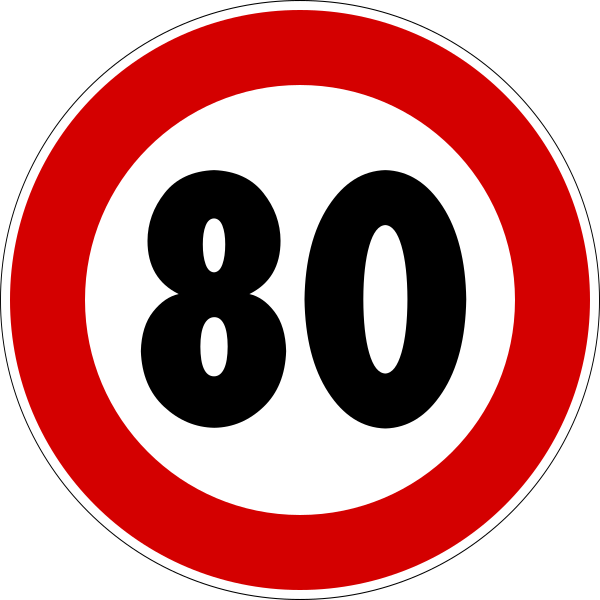
- A number in km/h is a maximum speed limit (limite di velocità). It forbids going faster, from the sign onward; going slower is always allowed, and the sign can stand on an autostrada too.
The no-passing sign up close
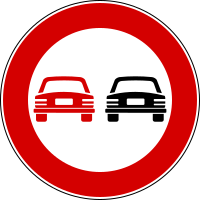
The two cars picture an overtaking maneuver: the red car on the left is the one passing, and that is you, while the black car on the right is the vehicle being passed. The red car's action is what the sign forbids, so the sign bans passing another motor vehicle. You may not pass the car ahead, and a motorcycle behind may not pass you.
- The exception is narrow and one-way: two-wheeled mopeds and motorcycles and non-motorized vehicles (bicycles, hand- or animal-drawn carts) may be passed, but, bound by the sign like everyone, they may not pass you. No other motor vehicle (car, truck, bus, even an electric or very slow one) may be passed at all. The sign is what allows you to pass such a two-wheeler, and the road markings are a separate rule, so a solid center line still may not be crossed to do it.
- The ban holds even if you stay in your own lane or never cross the solid line, and whatever the weight of either vehicle.
- Overtaking is always done on the LEFT. A statement that has you passing on the right is almost always false by that fact alone, whatever the sign shows (narrow exceptions aside, such as passing a vehicle that has signaled and begun a left turn).
- A no-passing ban lapses at the next intersection. To hold it over a longer road the sign is posted again after each intersection, often with a continuation panel (a double-headed arrow) showing the same restriction carries on. The sign is used on urban and extra-urban roads alike.
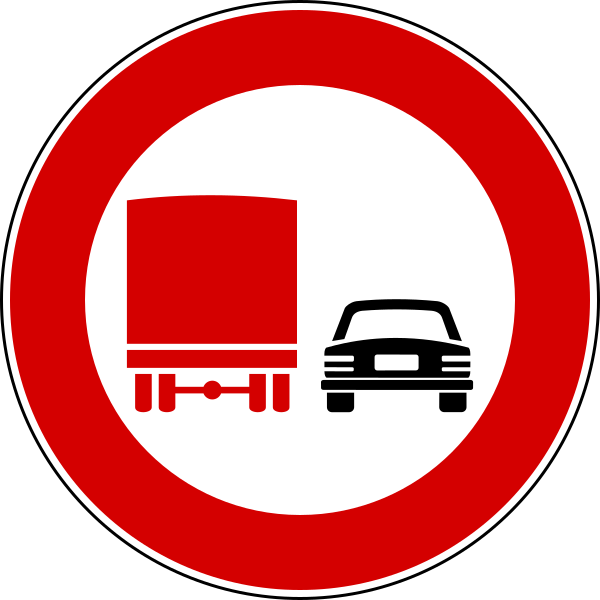
- The truck version binds only goods vehicles over 3.5 t, and such a truck may not overtake anything motorized, not even a motorcycle. Cars, lighter trucks, and passenger vehicles at any weight are not bound and may still overtake. This includes an articulated bus (autosnodato, the extra-long two-section bus joined by an accordion-style bend), buses, and motorhomes.
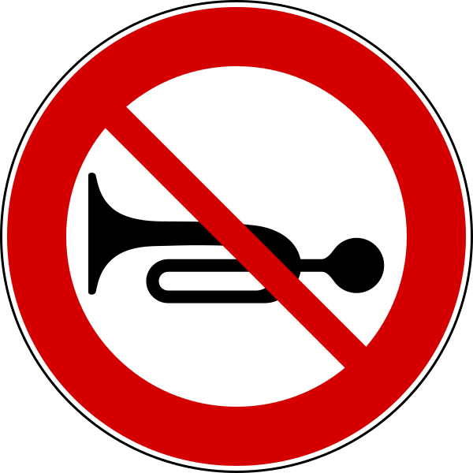
- Under the no horn sign (divieto di segnalazioni acustiche) you may still sound the horn to avoid an immediate danger, and the ban does not stop a vehicle carrying a seriously injured or ill person from using it.
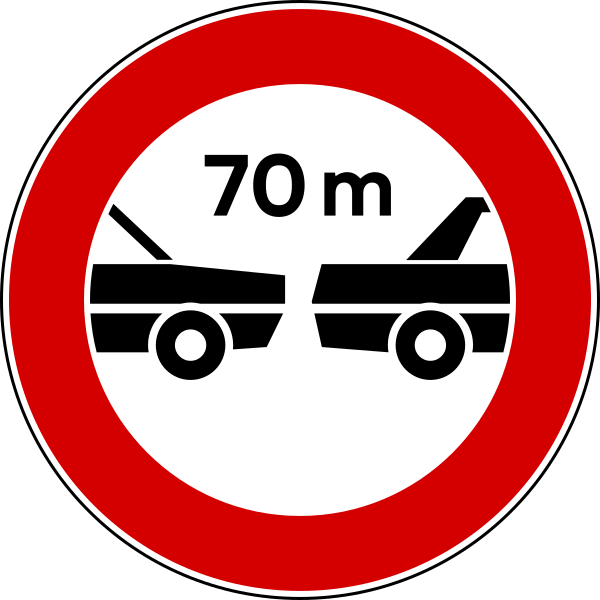
- The minimum following distance sign (distanziamento minimo obbligatorio, for example 70 m, about 77 yd) is a divieto too. It bans traveling closer than the stated distance to the vehicle ahead; it binds motorcycles as well, at any speed, however slowly the traffic moves. It typically stands at the entrance of a long tunnel, against fire risk, or of a viaduct, against structural load.
Bans by vehicle category
The questions test the limits of each prohibition as much as the prohibition itself.
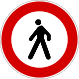
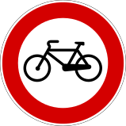
- A vehicle symbol bans exactly the pictured category (pedestrians, bicycles, motorcycles, animal-drawn vehicles, handcarts, autoveicoli, buses, trucks, trailers, agricultural machines), and the questions probe who is still allowed through. The pedestrian ban stops people on foot and nobody else; the bicycle ban also covers pedal quadricycles.
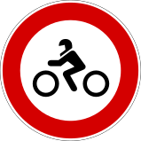
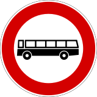
- A motorcycle pushed by hand is still a banned motorcycle, and the motorcycle ban covers every engine size, safety cell or not, while it leaves motor tricycles and quadricycles free to pass. The bus ban stops buses and trolleybuses, those under 3.5 t included, not cars or trucks.
- The motorcycle ban has no displacement threshold. It covers every motociclo, from the smallest one just over 50 cc to the largest, so a statement that narrows it to machines above 125 cc is false. At or below 50 cc the two-wheeler is a moped (ciclomotore), a different category, and it passes.
- No sign bans mopeds alone. A moped is stopped only by the signs that stop every vehicle, which are the empty red ring and DO NOT ENTER. A two-wheeled moped passes the bicycle ban, the motorcycle ban and the ban on all autoveicoli. The bicycle ban, in turn, stops only pedal vehicles, so mopeds and motorcycles pass it.
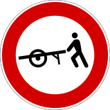
- The animal-drawn vehicle ban (the horse cart) stops carts pulled by horses, donkeys or any animal, with or without tires; motor vehicles, motorcycles and handcarts pass. It is not a road reserved for farm carts, and it has no 8:00 to 20:00 hours. The handcart ban (veicoli a braccia, the pushed cart) stops only vehicles pushed or pulled by hand: bicycles, mopeds, a car towing a small trailer, and animal-drawn carts pass, and a motorcycle pushed by hand is still a motorcycle, so it passes too. It is not a market-hours sign and not a warning sign.
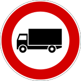
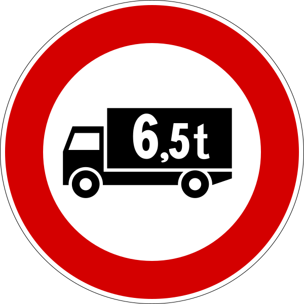
- The truck-symbol sign bans goods vehicles by their registered full-load mass (more on the weight signs below): with 3.5 t the light-truck limit, with 6.5 t (or any other figure on the panel) that limit instead. Only vehicles built for carrying goods are caught, by the mass written on the registration document; buses and motorhomes over the figure pass, a truck registered at 7.5 t does not, and a special-use vehicle over the figure does not either, and the sign has nothing to do with a public weighbridge.
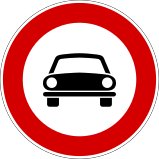
- The single-car symbol is the ban on all autoveicoli (transito vietato a tutti gli autoveicoli). It bans every autoveicolo, meaning cars, taxis, trucks and buses, and it also bans motor tricycles and motor quadricycles. Those two are not autoveicoli in law, but the sign covers them as well. So the rule to remember is that it bans every vehicle with a motor and more than two wheels. What may pass is what has no motor or only two wheels, which means two-wheeled mopeds and motorcycles, bicycles and other vehicles with no motor, and pedestrians. "Trucks may proceed" under this sign is therefore false. The drawing shows one four-wheeled car, so it is easy to read the sign as a ban on cars alone, or on four-wheeled vehicles alone. It is neither, because the car stands for every vehicle the ban covers. In this it differs from the pedestrian, bicycle and animal-cart signs in the boxes above, which ban exactly the one category they draw.
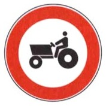
- The tractor symbol is a farm tractor: it bans agricultural machines (macchine agricole), which is a different vehicle from a road truck tractor (trattore stradale per semirimorchio, the cab that pulls a semi-trailer rig). The latter is not what this sign addresses, and neither are snowplows or motor quadricycles, which may pass.
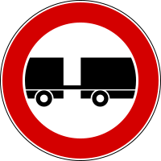
- The no-trailer sign bans any motor vehicle pulling a trailer (rimorchio). A car towing a travel trailer (caravan or roulotte) or a boat trailer is banned, because the Code classes both as trailers. The one towed thing that does not count is a carrello-appendice, a small luggage or tool cart with at most two wheels that stays within the size and mass limits the Code sets, so the Code treats it as part of the towing car and that car may proceed. Anything bigger than that is a trailer, and the car pulling it is banned. The sign also bans truck-and-trailer combinations and tractor-trailers, since a semi-trailer is a trailer. It does not ban articulated buses, which are one vehicle, and a panel can allow trailers up to a stated mass.
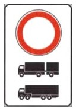
- The plain red ring over a silhouette panel is a no-through-traffic ban limited to the pictured categories, here truck-and-trailer combinations and tractor-trailers (autotreni e autoarticolati). They may not pass; every other vehicle may. It is a transit ban, not a parking ban, not a compulsory route for those vehicles, and not a reserved road or a truck parking area.
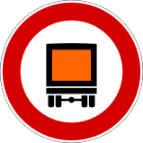
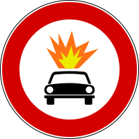
- Dangerous-load bans come in three forms. The first two are dangerous goods (orange-panel symbol), which catches a fuel tanker, and explosives or flammables. The fuel in your own tank never counts as a flammable load.
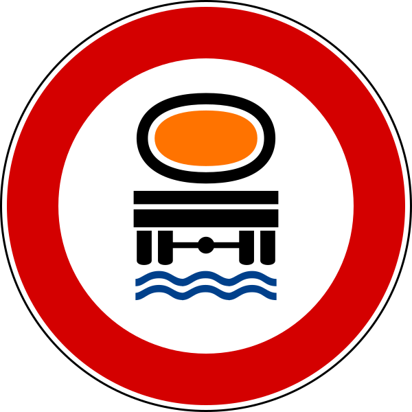
- The third is water-polluting loads. It bans the load whether it rides on the vehicle or on a trailer, and lets water tankers and street sprinklers through.
Bans by size and weight
These signs carry a number, and the number is the whole rule: the sign bans any vehicle whose dimension or mass exceeds it. Three things hold for all of them. The figure is always counted including the load (and, for length, the whole vehicle combination), and a limit binds the towing vehicle and its trailer alike. They bind every vehicle over the figure, buses and non-motorized vehicles included; the category makes no difference, only the measurement. And the limit must be exceeded, not merely met: a vehicle at exactly the figure is within it and may proceed.
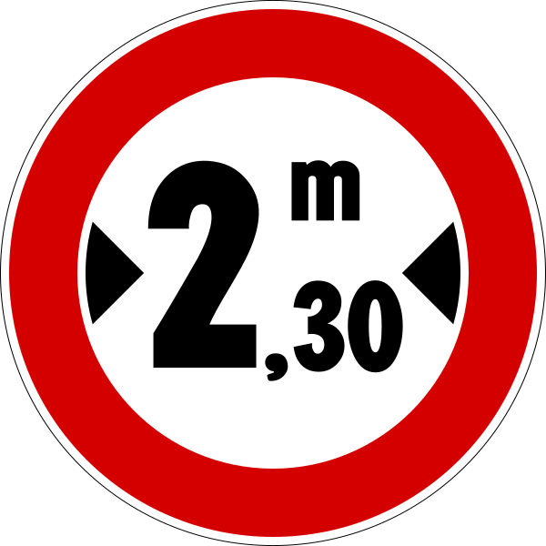
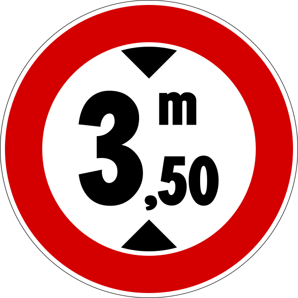
- The width and height signs show the figure in meters between width marks. The height sign is typical where the road passes under a bridge; the width sign often stands before a narrow section, though it states the vehicles' limit, not the road's width. Height is measured from the road surface, load included, never from the truck bed.
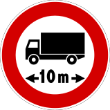
- The length sign works the same way, and the figure counts the whole vehicle combination, trailer included, with its load. The limit holds only where the sign stands, for example before a road with hairpin bends where a long vehicle cannot turn, and no road bans long vehicles without one.
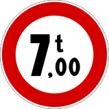
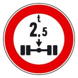
- The weight signs differ. The truck-symbol 3.5 t sign (met above among the category bans) bans goods-transport vehicles whose registered full-load mass (the figure on the registration document, not today's actual weight) exceeds it; buses and motorhomes over 3.5 t pass, and a panel can set a different figure; the plain t-figure sign bans any vehicle whose actual mass at that moment exceeds it (think bridges: a panel can even impose one-vehicle-at-a-time); the axle sign caps the actual mass per axle.
- The limit must be exceeded, not merely met. These figures ban vehicles that are over the number. A vehicle measured at exactly the limit is within it and may proceed: a 10 m (11 yd) combination at a 10 m length sign, or a 2.30 m (2.5 yd) width at a 2.30 m width sign. Read "superiore a" (greater than) literally.
- Total mass and mass-per-axle are two different signs. The plain t-figure caps the vehicle's whole actual mass; the axle sign caps only the mass resting on the single most-loaded axle. A heavy truck can satisfy the axle sign by spreading its load over more axles, while a lighter truck can fail it if one axle is overloaded. So "bans trucks over that total mass" is false for the axle sign. On a bridge, a panel can additionally allow only one vehicle at a time.
The two "no-entry" signs (a commonly confused pair)
Two round red signs both keep you out of a street, and they are easy to confuse. One, the empty red ring, closes the road to all vehicles in both directions. The other, the red disc with a white bar, closes it in one direction only, because traffic comes toward you: it is the back of a one-way street. Read which one is drawn before answering who may pass and which way.
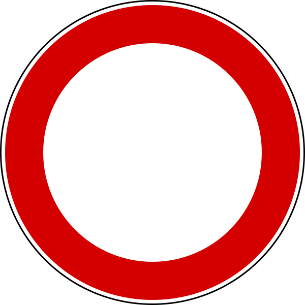
- No through traffic, both directions (transito vietato) is the plain red ring on white. No vehicle may proceed either way: not bicycles, mopeds, quadricycles, or electric cars either, and not even to enter for parking or loading. Only pedestrians may pass, plus any category a panel admits. It is posted at both ends of the road, and a panel can limit it to certain hours.
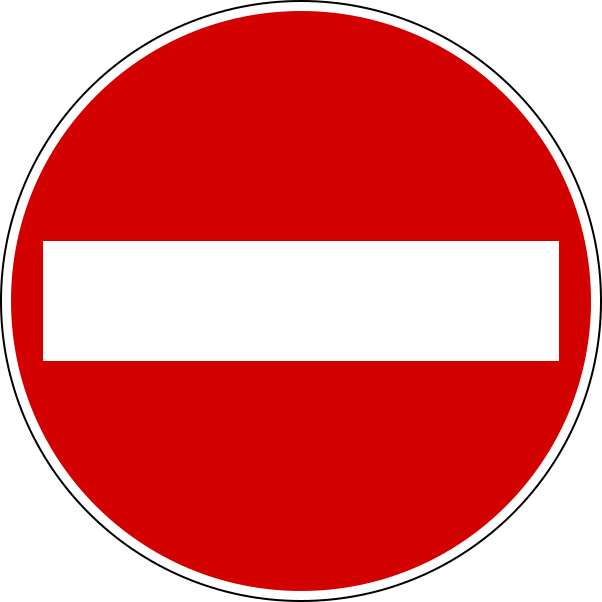
- DO NOT ENTER (senso vietato) is the solid red disc with a white bar, the US "wrong way / do not enter" situation. You may not enter because traffic comes toward you; you may still leave the street by that end. It binds every vehicle, non-motorized ones, mopeds, motorcycles, quadricycles and taxis included, by night as by day. It is the reverse side of a one-way street (senso unico), whose entrance carries the blue "one-way" arrow. The plain red ring, by contrast, is a ROAD CLOSED to all vehicles in both directions.
No parking versus no stopping (the key distinction in this topic)
Both are blue circles with a red border, and the difference is what the red marks add.
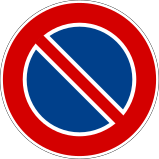
- No parking (divieto di sosta) has a single red diagonal. It forbids parking, which means leaving the vehicle waiting, but it still allows a brief stop to set down or pick up. In town it applies from 8:00 to 20:00 unless a panel says otherwise; outside town it applies around the clock.
- The ban holds on the side of the road where the sign stands, from the sign to the next intersection (unless repeated or ended by a panel), and it binds motorcycles and mopeds too.
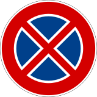
- No stopping (divieto di fermata) has a red cross (two diagonals). It forbids even a brief stop, which necessarily also forbids parking. A vehicle left where this sign stands is always towed, which the plain no-parking sign does not do on its own.
Note the Italian distinction behind the pair. A fermata is a brief halt, and a sosta is parking. No-stopping is the stricter sign, because banning the halt bans the parking too.
Parking signs in practice
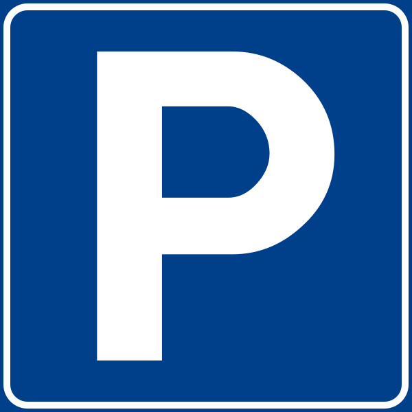
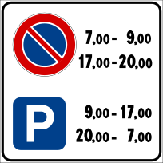
- The blue P marks authorized parking, open-ended unless a panel adds hours, fees, categories, a time limit (disco orario, the cardboard clock you set to your arrival time), or an arrow and distance to the lot.
- The hours-regulated parking sign (regolazione flessibile della sosta) is a composite panel listing the hours in which parking is allowed and those in which it is forbidden, for example banned 7:00 to 9:00 and 17:00 to 20:00, allowed in between and overnight. It regulates parking only, never a brief stop, it involves no parking disc, and it carries no tow-away even in the banned hours.
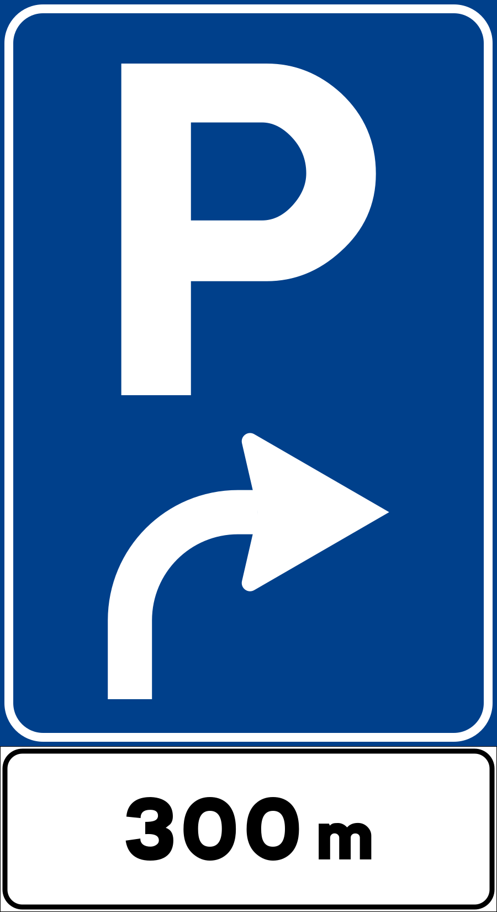
- The P with an arrow and a distance is an advance sign for a parking area: follow the arrow, and the lot is that far ahead (here 300 m). It announces parking that is available, not forbidden and not reserved, and it is not a first-aid post.
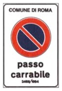
- Two special members belong here. The passo carrabile sign forbids parking in front of a driveway, in town or outside it, by day and by night, though a brief halt that obstructs nobody is allowed; it must show the issuing authority and the permit number. The disability parking sign is an exception to a ban, reserved for vehicles displaying the placard.
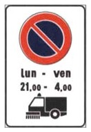
- The temporary no-parking sign for mechanical street cleaning bans parking on the posted days and hours, and the ban falls on everyone's parking so that the sweeper finds the curb clear. The pictured machine is the reason for the ban and never its target.
When the no-parking sign applies, and when a car is actually towed
- Hours. In town the no-parking sign runs 8:00 to 20:00 by default (a panel may set other hours); outside town it is continuous, 24 hours a day. The stricter no-stopping sign applies around the clock everywhere. The common false statements flip these: they reverse the window to 20:00–8:00, claim parking frees up after 20:00 on an extra-urban road, or stretch the urban 8:00–20:00 rule to roads outside town.
- Tow-away is not automatic. A plain no-parking sign by itself does not mean your car will be towed. Removal applies only where a ZONA RIMOZIONE (tow-away zone) panel is added, or under the no-stopping sign. "Always subject to tow-away" under the bare no-parking sign is false.
- Where no sign is needed. The no-parking sign is posted only where parking would otherwise be allowed. Where the law already forbids it, there is no sign, because the general rule already applies. These spots are a crosswalk, an intersection, tram or railroad tracks, the area within 5 m (5.5 yd) of a street corner, in front of a driveway (passo carrabile), and double parking (sosta in seconda fila, in a second row beside vehicles already parked at the curb). You are expected to know these spots; that is why a statement saying the sign "is not placed where no-parking is already the general rule" is true.
How extent and exceptions are shown
- A supplementary panel under the sign can limit it by distance, length of zone, time of day, days of the week, or vehicle category. Without such a panel a prohibition holds at every hour, by night as by day, and on every day of the week, in town and outside it.
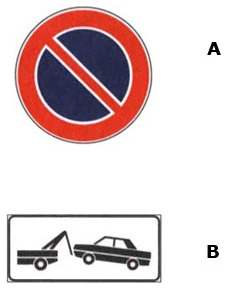
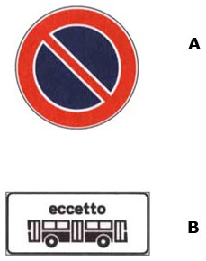
- No parking with the tow-truck panel is a ZONA RIMOZIONE COATTA: parking is forbidden and the car is towed. The same disc with a days panel limits the ban to those days: "giorni lavorativi" means working days only, "giorni festivi" holidays only, so with either panel the ban is not permanent. No parking with an "eccetto" panel exempts the pictured category: with the bus, buses may park and everyone else may not.
- The arrow and symbol panels tell you where and when the ban applies. An upward arrow marks the start of the zone and a downward arrow marks its end; a double-headed arrow (horizontal or vertical) means the ban continues along the stretch. It does not turn the ban into a "permanent" one. A small cross symbol (†) means public holidays (giorni festivi), so the ban applies only on holidays; the cross is easy to miss, so look for it. Panels can also grant exceptions, for example for vehicles serving people with disabilities.
End-of-restriction signs
When a prohibition ends, the sign is shown in gray with a diagonal band and no red. These end-of-restriction signs are regulatory signs (segnali di prescrizione), the same family as the bans they lift, and not information signs: an information sign names places, routes, services and facilities and orders nothing.
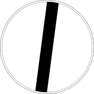
- A single diagonal across an empty circle ends all previously signed restrictions at once. It is called the 'via libera' (all clear) sign. It ends restrictions only: no sign ends a danger, since a warning sign imposes nothing to cancel, and a danger's reach is given instead by an extent panel under the warning sign.
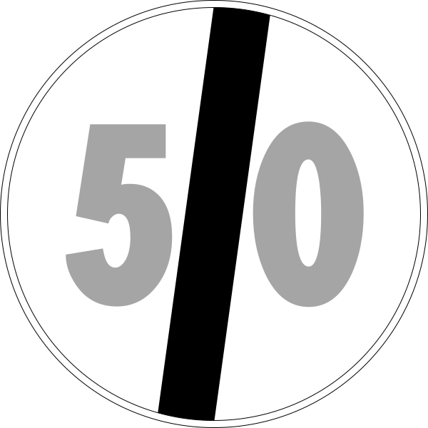
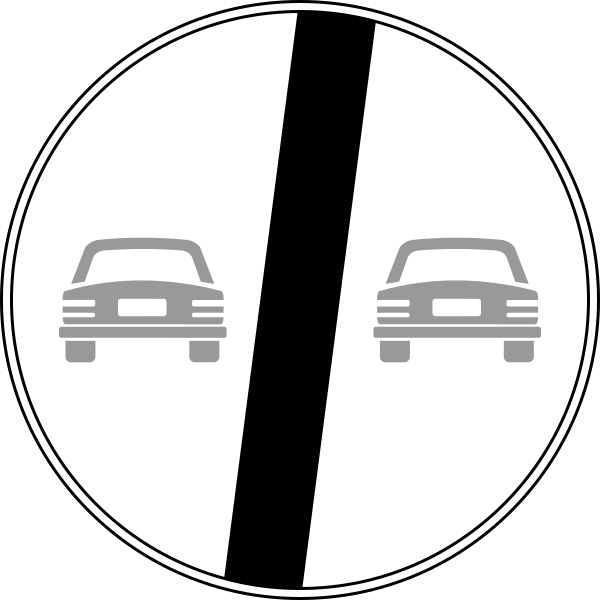
- The specific sign repeated in gray with a diagonal (for example, the two cars or a speed number) ends only that restriction. It can mark the end of the no-passing zone, the end of the speed limit, and so on. The end of the no-passing zone is valid around the clock, in town and out, and even there you may not overtake across a solid line.
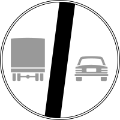
- The gray truck-and-car pair with the diagonal ends the no-passing ban for goods vehicles over 3.5 t only: from here a truck, even a 44 t combination, may overtake a car or a bus again. It is an end-of-restriction sign, not a warning and not a transit ban on heavy vehicles; it says nothing about buses, which that ban never covered, and nothing about cars passing trucks on the right.
How the exam phrases it. "The sign permits X" is true unless the sign's own rule forbids X, even for things the sign never mentions; "the sign forbids X" is true only if its rule reaches X (a weight sign forbids nothing about length, the no-motorcycles sign forbids nothing about mopeds). Three families are always false: an invented exception (motorcycles with a safety cell, bicycles at night, animal carts with tires, farm machines during fairs, tourist or school buses under the no-bus sign); an added absolute that changes the scope (solo, soltanto, tutti, qualsiasi: "forbids overtaking any vehicle" is false because mopeds may still be passed); and a swapped pair (the no-stopping sign does not "forbid parking but permit a stop").
Summary of key points
- A prohibition sign means must not. It never warns of danger or grants precedence.
- Most are a red-bordered white circle, and the symbol or number says what is banned.
- No through traffic (empty red ring) differs from no entry (red disc with white bar).
- No parking (blue circle, one red diagonal) still allows a brief stop. No stopping (blue circle, red cross) forbids even that.
- A gray sign with a diagonal and no red marks the end of a restriction. A single diagonal ends all of them, and the repeated symbol ends just one.
- The ban runs from the sign until an end sign, the next intersection, or the limit on a panel.